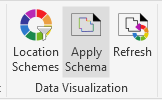
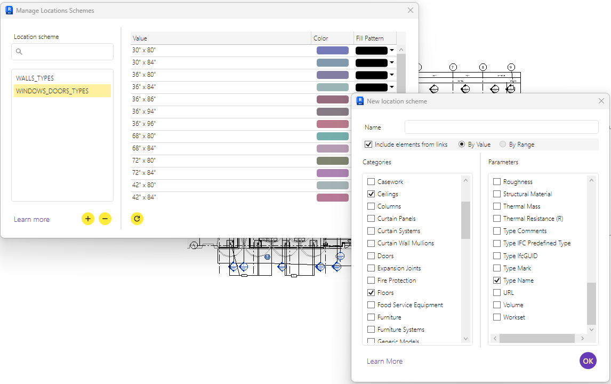
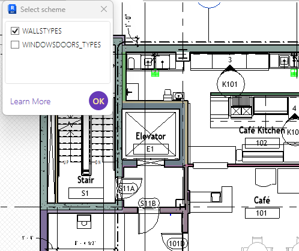

Location Schemes

Lets users visually identify elements by assigning colors based on the value of a selected parameter.
Manage Location Schemes

- Left panel: list of existing location schemes
- Right table:
- Lists all unique values found for the selected parameter
- Assigns colors and fill patterns to each value
** Actions:** - Add new scheme - Remove selected scheme - Force refresh in case the model has changed (e.g. new values added) - Expand side panel to edit scheme details
New Location Scheme Setup

- Name of the scheme
- Whether to include elements from linked models
- Scheme type:
- 🔘 By Value: for nominal/text values (e.g. Type Name)
- 🔘 By Range: for numeric values (e.g. Volume, Area), grouped in steps
- Categories to include (e.g. Walls, Doors, Floors)
- The parameter to use for classification
💡 The system automatically generates color assignments for each value or range.
Apply Scheme to View

- Simple scheme picker window
- Toggle which schemes are active
- Elements are visually highlighted based on their assigned values
- The view will retain the visual overrides defined by the active schemes.
⚠️ Note: Schemes can only be applied to views of type Floor Plan, Section, 3D, or Drafting.
💡 To reflect recent changes (e.g. edited or newly added values), reopen the scheme picker or use the Force Refresh button in the Manage Location Schemes window. 💡 If an element is updated with a value that doesn't yet exist in the scheme, you must refresh the scheme to ensure it gets correctly classified and displayed.
Use Case Examples
- Visual breakdown of window/door types
- Area range highlighting for space planning
- Fire-rating visualization for walls
- QA/QC on Type Marks and other classifications